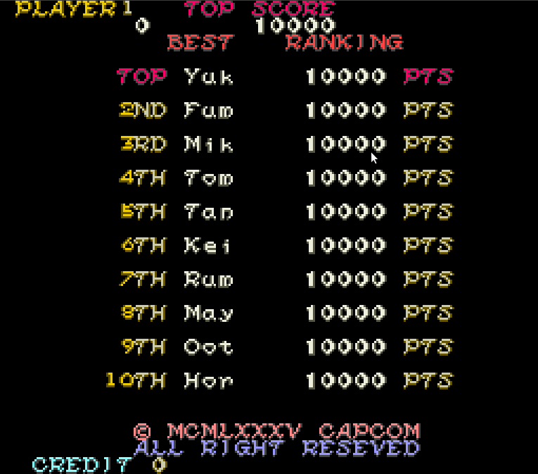
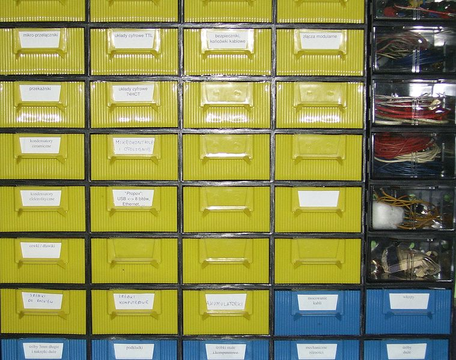

Tractament modular de dades. El joc de combats a l'arena
Els principis de la modularitat també són aplicables per resoldre problemes en els quals es duen a terme operacions amb fitxers. De fet, normalment dins de les aplicacions se solen generar mòduls clarament diferenciats vinculats a la gestió de totes les dades persistents.
En aquest apartat es planteja un exemple d’aplicació modular on es duu a terme el tractament de dades emmagatzemades en fitxers. Concretament, s’estudia com ampliar una aplicació ja existent, generada usant els principis de modularitat, de manera que aquests principis se segueixin mantenint en la nova versió amb noves funcionalitats.
Descripció del problema
El programa que serveix com a punt de partida és un joc on l’usuari, el jugador, es va enfrontant amb successius adversaris en una arena de combat. Tant el jugador com els seus adversaris són definits per un seguit de valors, que anomenaran els seus atributs, mitjançant els quals s’indica la seva perícia lluitant: resistència, nivell de poder, capacitat d’atacar o defensar, etc.
Cada combat es divideix en rondes, a l’inici de les quals el jugador i el seu adversari trien secretament una estratègia a seguir. En cada ronda es pot seguir una estratègia diferent. Segons les estratègies triades per cadascú, el combat s’anirà resolent més favorablement cap a un o cap a l’altre, fins que finalment es consideri que un dels dos ha estat derrotat. Si es derrota l’adversari, s’atorga una puntuació al jugador. Si el jugador és derrotat, acaba la partida. L’objectiu final del jugador és sobreviure deu combats, assolint la màxima puntuació possible en el procés.
Divisió del problema
Si bé el procés de resoldre les rondes de combat segons els atributs dels lluitadors té les seves particularitats, per plantejar quin és el funcionament de l’aplicació, es deixarà en aquesta descripció general, sense entrar en més detall. De totes maneres, si voleu fer la idea més aclaridora, tot seguit s’exposa la descomposició del problema mitjançant disseny descendent:
A la secció “Annexos” del web disposeu del codi font complet de l’aplicació sobre la qual es treballa en aquest apartat. Estudieu-lo atentament.
- Generar els atributs del nou jugador.
- Anunciar inici del combat.
- Mostrar estat del jugador.
- Triar l’adversari.
- Combatre.
- Mostrar estat dels lluitadors.
- Mostrar estat del jugador.
- Mostrar estat de l’adversari.
- Triar estratègia del jugador.
- Triar estratègia de l’adversari.
- Resoldre resultats d’estratègies.
- Llançar monedes.
- Penalitzar lluitador.
- Danyar lluitador.
- Guarir lluitador.
- Restaurar lluitador.
- Resoldre resultat del combat.
- Atorgar puntuació.
- Pujar de nivell.
- Finalització del joc.
Mòduls del programa
Partint de la divisió en subproblemes del joc de combats de l’arena, s’ha fet la divisió en mòduls següent. D’una banda, en el package joc.arena.regles hi haurà les classes:
- Monedes: per a les tasques vinculades al llançament de monedes per resoldre una ronda.
- Lluitador: per a les tasques vinculades a la manipulació de les dades d’un lluitador (danyar, guarir, etc.).
- Bestiari: per a les tasques vinculades a la generació d’adversaris i el jugador.
- Combat: per a les tasques vinculades a la resolució d’estratègies enfrontades.
D’altra banda, en el package joc.arena.interficie es decideix dividir les classes que tracten la pantalla i el teclat, de manera que hi haurà:
- EntradaTeclat: s’encarrega de les tasques importants que són donades pel que escriu l’usuari usant el teclat.
- SortidaPantalla: com l’anterior, però per mostrar informació en pantalla.
La classe principal, JocArena és al package que engloba els anteriors, joc.arena, donada la jerarquia de noms.
Partint d’aquesta descripció, es volen afegir dues funcionalitats noves:
- Mantenir un rànquing amb les deu millor puntuacions obtingudes. Aquestes es desen en un fitxer, de manera que es mantenen entre partides diferents. En finalitzar el joc, si un jugador ha obtingut una puntuació que mereix estar entre les deu primeres, pot indicar quines són les seves inicials (tres lletres), perquè hi constin associades a la puntuació.
- Ara mateix, els atributs dels adversaris estan escrits en el codi font del programa (a la classe
Bestiari). Això impedeix afegir nous adversaris fàcilment. Caldria modificar el seu codi font i compilar de nou el programa. Estaria bé que les dades dels adversaris s’obtinguin d’un fitxer, de manera que, només modificant aquest fitxer, el programa ja incorpora sempre automàticament els adversaris continguts.
Criteris d'elecció de tipus de fitxer
Una de les primeres decisions que cal prendre quan cal tractar fitxers és establir com s’hi emmagatzemaran les dades (en format caràcter o byte) i l’accés que es durà a terme (seqüencial o relatiu). En molts casos, sigui quin sigui el sistema triat, el problema es podrà resoldre igualment. L’única diferència serà la complexitat de l’algorisme que cal implementar i el nombre de vegades que s’ha de llegir el fitxer. En qualsevol cas, usar accés relatiu sempre implicarà que el fitxer serà orientat a byte.
A la taula es resumeixen alguns pros i contres de cada tipus, perquè els tingueu en compte.
| Tipus de fitxer | Avantatges | Desavantatges |
|---|---|---|
| Orientat a caràcter | Són fàcils de crear i editar amb eines externes (un editor de text simple). Són fàcils de depurar (veure si el seu contingut és correcte. En llegir-los, és fàcil comprovar mitjançant codi de tipus d’una dada dades abans de llegir-la (mètodes hasNex…). | La mida que ocupa cada valor pot ser molt variable. Cal controlar el nombre de valor en el fitxer, o alguna marca de finalització Només permeten tractament seqüencial. No es poden sobreescriure fragments concrets. Cal reescriure tot el fitxer al complet. |
| Orientat a byte | La mida que ocupa cada valor es sempre la mateixa. Lligat al punt anterior, es fàcil calcular quants valors contenen. Permeten l’accés relatiu. Permeten sobreescriptures parcials de les dades. | El codi és més complicat. No és fàcil veure què contenen. No permeten comprovar els tipus dels valors abans de llegir-los. En cas d’error, és difícil de detectar. |
La biblioteca "joc.arena.fitxers"
Normalment, el tractament de dades dins de fitxers se sol fer en un package diferenciat. Aquesta decisió és coherent amb la de disposar, per exemple, d’un altre vinculat a l’entrada / sortida de dades amb el teclat i la pantalla. A l’hora de triar el nom del package, és recomanable mantenir també en el seu nom la relació jeràrquica entre mòduls dins l’aplicació. Per tant, aquest package es pot dir joc.arena.fitxers.
Una aproximació assenyada per enfocar l’estructura d’aquesta biblioteca és fer-ho de manera que cada fitxer sigui tractat per una classe diferent. En aquest cas, doncs, caldrà dues classes noves, una per tractar el fitxer amb la llista de puntuacions i un altre per al tractament dels adversaris.
La classe Ranquing
Aquesta classe serà l’encarregada de gestionar el fitxer amb les màximes puntuacions. Ha de poder tant llegir-les per mostrar-les per pantalla com modificar-ho per escriure’n de noves.
- 
- Una llista de màximes puntuacions.
Amb vista a tenir una idea clara de com ha de funcionar, cal decidir quin serà el funcionament exacte de la llista de puntuacions màximes. Aquesta llista tindrà sempre 10 entrades, i inicialment, quan encara no s’ha jugat cap partida, hi haurà un seguit de puntuacions per defecte.
Elecció de tipus de fitxer i accés
Abans de començar cal escollir el nom del fitxer on mantenir les dades persistents, la seva ubicació al sistema de fitxers, i el seu tipus i com tractar-lo.
Pel que fa al nom, això ja és a gust del programador. En aquest cas, es pot anomenar “Ranquing”. Ara bé, per triar-ne la ubicació, el més assenyat normalment és que la ruta a un fitxer sigui relativa, per no imposar cap restricció sobre quines carpetes hi han d’haver en cada ordinador on es copiï el programa. En aquest cas es pot usar la pròpia carpeta de treball de l’aplicació.
Només queda decidir el tipus de fitxer. D’entrada, sempre val la pena preveure l’opció d’un fitxer de text seqüencial, ja que és el més senzill de processar i depurar. En aquest sentit, un llistat de 10 puntuacions és una informació que es pot tractar seqüencialment de manera simple, tant per mostrar-la per pantalla com per cercar on cal afegir nous elements. L’única part on no tot encaixa perfectament és per inserir puntuacions. Caldrà reescriure el fitxer des de zero. Però com és un fitxer molt petit, 10 línies, no és un gran problema i es considera assumible.
Propagació d'errors
Quan es realitzen operacions sobre fitxer, poden succeir un seguit de situacions errònies. Per exemple, intentar llegir dades d’un fitxer inexistent, llegir dades quan ja s’ha arribat al final del fitxer o d’un tipus inesperat, en tenir el fitxer un format incorrecte. En Java, aquests errors s’anomenen excepcions, i cal controlar-los usant una sentència try/catch.
En el cas d’un programa modular amb fitxers, és molt important que, cada cop que s’invoca un mètode on dins el seu codi es tracten fitxers, el codi que ha dut a terme la invocació pugui establir si tot ha anat bé o no. Per tant, els mètodes que tracten dades en fitxers han de poder avisar si han fet totes les tasques correctament o no.
La propagació d’errors és el mecanisme mitjançant el qual un mètode avisa al codi que l’ha invocat si ha pogut dur a terme la seva tasca correctament o no.
Hi ha diferents mecanismes per dur a terme la propagació d’errors. Per a aquesta classe s’ha usat el més simple, que és reservar un dels valors del paràmetre de sortida per indicar que ha succeït un error (sovint, s’usa el valor -1). Un cop s’ha avaluat el mètode invocat, cal comprovar si el resultat és el valor reservat o no. Si és així, és que hi ha hagut una excepció dins el mètode, i per tant aquest no ha pogut dur a terme la seva tasca correctament. Llavors, cal actuar en conseqüència. Per exemple, mostrant un missatge d’error per pantalla.
En el cas de mètodes que no disposen de cap paràmetre de sortida (tipus void), es força a què tinguin un paràmetre de sortida de tipus enter, que servirà exclusivament per establir si tot ha anat bé o no. Normalment, es fa que s’avaluïn a 0 si tot ha anat bé i -1 si hi ha hagut alguna excepció.
De moment, en el codi de la classe Ranquing només es pot veure la propagació d’errors pel que fa a la part de tractament d’excepcions i retorn del valor -1. Més endavant, quan es vegi com s’invoquen aquests mètodes des d’altres classes, us quedarà més clar com es controla la propagació per establir si el mètode ha funcionat correctament o no i actuar en conseqüència.
Codi font de la classe
Donades les necessitats exposades, el codi font de la classe pot ser el que es mostra tot seguit. Entre les seves particularitats, a part dels aspectes anteriors, hi ha les crides internes al mètode generarFitxerInicial, que comprova si el el fitxer de puntuacions existeix, i si no és el cas, el crea des de zero. Això és més eficient que no pas dir que hi ha un error i no poder fer-hi res. Sobretot en el cas que s’acaba de jugar una partida on s’ha obtingut una màxima puntuació, ja que aquesta es perdria! Sempre és millor corregir un error si és possible, en lloc de simplement anunciar-lo i no fer-hi res més.
També, donades les particularitats dels fitxers seqüencials, observeu en el mètode entrarPuntuacio com cal generar un fitxer temporal, ja que no es pot sobreescriure directament l’original.
La classe Bestiari
La classe Bestiari és l’encarregada de generar els lluitadors, tant el jugador a l’inici del joc com els successius adversaris. A la versió original tot està emmagatzemat en el codi font del programa. Ara es vol fer una nova versió, pertanyent a un package diferent, que obtingui tota la informació des d’un fitxer. D’aquesta manera, és possible usar diferents llistes d’adversaris, o afegir-ne de nous, sense haver de modificar el codi font del programa. Només cal canviar aquest fitxer.
Elecció de tipus de fitxer i accés
En aquest cas, el nom del fitxer on tenir desades les dades dels adversaris serà “Adversaris”, i també s’usarà una ruta relativa.
Abans de poder escriure el codi font cal tenir ben clar quin serà el format del fitxer i la seva estructura. En aquest cas, us trobeu que heu d’adaptar una classe en la qual tot s’estructura dins un array originalment, i el que es vol és treballar sobre un fitxer. El tipus de fitxer que s’assembla més a un array en la seva manera de treballar, per poder accedir a les seves posicions de manera directa, és un fitxer d’accés relatiu. Per tant, s’usarà aquest sistema de tractament de dades, cosa que implica que cal usar un fitxer orientat a byte.
Cal definir detalladament l’estructura del fitxer i com s’agrupen els conjunts de valors emmagatzemats (els atributs dels adversaris). El més sensat és proposar una adaptació més o menys directa de l’array usat en la versió original. Ara bé, per poder treballar amb un fitxer orientat a byte de manera relativa, com si fos un array, és important que cada conjunt de dades tingui una mida fixa (en aquest cas, cada adversari). Això vol dir que cal fitar la mida del nom. No pot ser de qualsevol llargària. Per a aquest programa, la mida es fitarà a 15 caràcters. En el cas de noms amb menys de 15 caràcters, la resta de bytes s’omplen tots a 0 fins a arribar als 15 caràcters (30 bytes).
Amb un fitxer relatiu orientat a byte, fins i tot és possible plantejar cerques dicotòmiques directament sobre aquest.
D’aquesta manera, cada adversari ocupa sempre 50 bytes: 15*2 (nom, compost de 15 caràcters de 2 bytes) + 5*4 (els 5 atributs, que són enters de 4 bytes). La taula mostra un resum de l’estructura.
| Bytes 0-29 | Bytes 30-33 | Bytes 34-37 | Bytes 38-41 | Bytes 42-45 | Bytes 46-49 |
|---|---|---|---|---|---|
| Nom (caràcters) | Nivell (enter) | Punts (enter) | Vida Màx (enter) | Atac (enter) | Defensa (enter) |
Donada aquesta estructura, la figura mostraria un exemple de visualització del fitxer mitjançant un editor hexadecimal. Les dades relatives al primer adversari (de nom “Nan”) estan ombrejades. Fixeu-vos com els primers 34 bytes corresponen al nom. Els 6 primers són els caràcters del nom pròpiament i la resta són a 0. A partir del byte número 30, hi ha cinc enters, cadascun de 4 bytes, associats als seus atributs, de manera que:
- Nivell = 0x00000001
- Punts = 0x00000019 (25 en decimal)
- Vida = 0x00000008
- Atac = 0x00000003
- Defensa = 0x00000003
Codi font de la classe
Aquest cas és una mica diferent del rànquing de puntuacions, ja que no es tracta d’afegir un mòdul nou. Es tracta de reemplaçar un mòdul amb unes funcions concretes (gestionar adversaris a partir d’unes variables globals) per un amb unes altres (que aquesta gestió es faci usant un fitxer). Això és una situació molt interessant, ja que si s’apliquen els principis de modularitat correctament, les modificacions a la resta del programa haurien de ser mínimes.
- 
- Canviar un mòdul d'un programa hauria de ser com canviar un moble modular. Font: Bercik
Aquest és, precisament, el sentit de la modularitat. Poder canviar un mòdul (en aquest cas, una classe), per un altre sense haver de tocar res més. Tal com es faria quan es canvia una calaixera modular o un mòdul de memòria de l’ordinador. Treieu l’antic, poseu el nou, i tot continua funcionant sense haver de tocar res més. Si s’assoleix això, tot s’ha fet perfectament.
L’estratègia per assolir aquesta fita sempre és la mateixa. Intentar mantenir els mateixos mètodes, amb els mateixos paràmetres, que hi havia a la classe original, i només modificar el bloc de codi que contenen. D’aquesta manera, no cal esmenar el codi on hi ha invocacions en qualsevol dels mètodes originals, ja que la seva definició serà la mateixa a la classe nova que a l’antiga. Si és necessari, es poden afegir nous mètodes, però és imprescindible mantenir el format dels que ja hi havia abans del canvi.
Per tant, fixeu-vos com, a la nova classe, els mètodes que hi ha són exactament els mateixos que hi havia inicialment, mantenint el seu format (nom i paràmetres). Tot i així, s’han creat alguns mètodes nous per tal reutilitzar codi (per exemple, crearAdversari o llegirNom).
La classe auxiliar EditorBestiari
El problema dels fitxers orientats a byte és que no resulten fàcils d’editar. Per això, per a aquest cas, pot resultar útil disposar d’un programa auxiliar que serveixi d’editor de la llista d’adversaris, de manera que sigui fàcil manipular-la. Aquest pot visualitzar, afegir i esborrar entrades al fitxer binari.
Eines de desenvolupament de jocs
És molt habitual que els programadors de videojocs tinguin eines auxiliars per generar els fitxers de dades dels jocs que estan creant. Aquestes s’anomenen eines de desenvolupament de jocs.
Codi font de la classe
Tot seguit es mostra el codi font d’aquest programa auxiliar, creat monolíticament en una sola classe, però aplicant disseny descendent. El fitxer d’adversaris es pot editar partint des de zero, o bé des d’un ja existent. Per simplificar el seu codi, totes les operacions d’afegir o eliminar treballen sobre el final del fitxer del fitxer.
Esmenes als mòduls originals
Un cop s’han generat els nous mòduls que amplien el programa original de manera que algunes de les seves tasques depenguin de la lectura o escriptura de fitxers, cal modificar el codi original per tal que s’usin els nous mòduls. Una correcta aplicació de la modularitat hauria de minimitzar el nombre de canvis al codi i fer que aquests estiguin molt ben localitzats. De fet, el cas ideal seria que només cal afegir nou codi, però no modificar, o fins i tot eliminar, codi ja existent.
A la classe EntradaTeclat
El mètode ''trim'' elimina els espais a dreta i esquerra d'un text.
La introducció d’una màxima puntuació al rànquing implica poder demanar a l’usuari, si es compleixen les condicions necessàries, que introdueixi les seves inicials. Si es vol seguir estrictament el plantejament modular de l’aplicació, això vol dir que cal un nou mètode a la classe EntradaTeclat. Aquest ha de comprovar que, efectivament, es tracta d’unes inicials (en aquest cas, es considera que tres lletres).
Noteu que el canvi de la classe Bestiari no afecta en absolut aquesta classe, tot i que la fa servir. Això vol dir que s’ha aplicat correctament la modularitat.
A la classe SortidaPantalla
Un altre nou aspecte del programa és que cal mostrar el rànquing de puntuacions en acabar el joc. Donat el plantejament de la classe Ranquing, aquesta tasca és molt simple i es podria dur a terme directament a JocArena. Tot i així, per ser coherents amb el fet que els mètodes que mostren diverses línies de text per pantalla, com l’estat del lluitador, són a aquesta classe, se serà estricte en l’aplicació de la modularitat tal com s’ha plantejat a l’aplicació originalment.
Com abans, noteu que el canvi de la classe Bestiari no afecta en absolut a aquesta classe, tot i que la fa servir. També observeu ara com es comprova la propagació d’errors des del mètode llegirRanquing, mirant si s’ha avaluat null o no.
A la classe JocArena
En aquesta classe, només cal modificar el mètode inici per tal que, el programa prevegi les noves funcionalitats. D’una banda, ara cal garantir que s’inicialitzen els valors dels adversaris a partir d’un fitxer. D’altra banda, en acabar la partida, cal que es comprovi si pertoca afegir una nova màxima puntuació al fitxer i realitzar les operacions corresponents al teclat i la pantalla (entrar inicials i mostrar rànquing actual).
A l’apartat d’annexos dels materials disposeu del codi font complet amb la solució final d’aquest exemple.
Tot i que s’ha intentat minimitzar el nombre de canvis necessaris a causa de la nova classe Bestiari, cal alguna modificació, ja que almenys cal controlar si el fitxer d’adversaris existeix abans de fer res. A part d’això, el canvi de classe no afecta en res més.